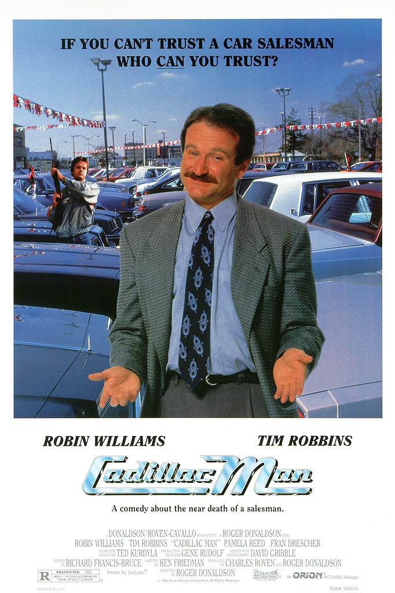
I. The Basics of Problem-Solving in a Community
The Role of Stakeholders in Policy-making
Justin Leinaweaver (Spring 2025)
Getting Involved in our Community
Find or create an opportunity to get actively involved in your issue locally (e.g. litter pickup, river cleanup, working with a local NGO or city agency on your issue, etc.)
Write a report describing what you did, who you worked with and what you learned that will help you with solving your chosen policy problem.
An Effective Policy Designer Must…
Consider why Policies Exist
An Effective Policy Designer Must…
Consider the “Politics”
An Effective Policy Designer Must…
Consider the “Problem”
An Effective Policy Designer Must…
Consider the “Baseline”
An Effective Policy Designer Must…
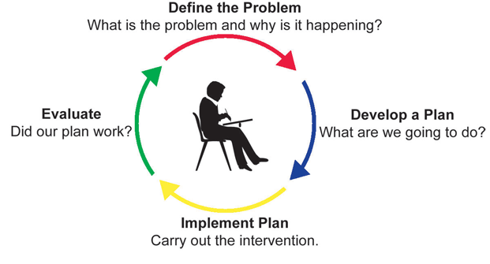
Consider the “Domestic Process”
An Effective Policy Designer Must…
Present a Complete Proposal
Describe the problem facing our community
Investigate the relevant stakeholders
Frame the problem
Consider policy designs…
A description of the scientific basis for your problem,
An argument that this is a public problem,
An argument that this requires a collective decision, and
An analysis of at least two stakeholders with opposing viewpoints of the problem
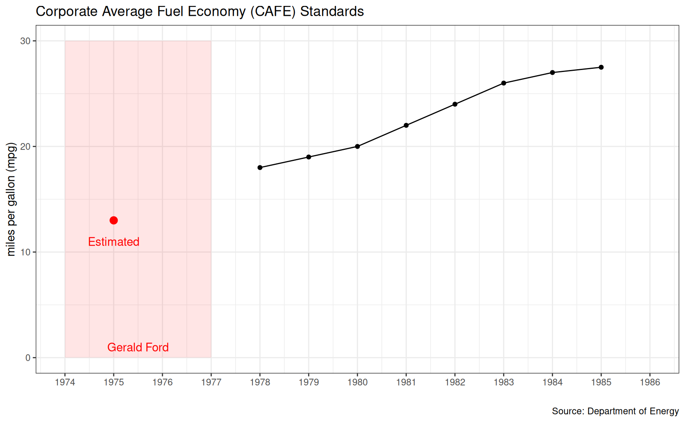
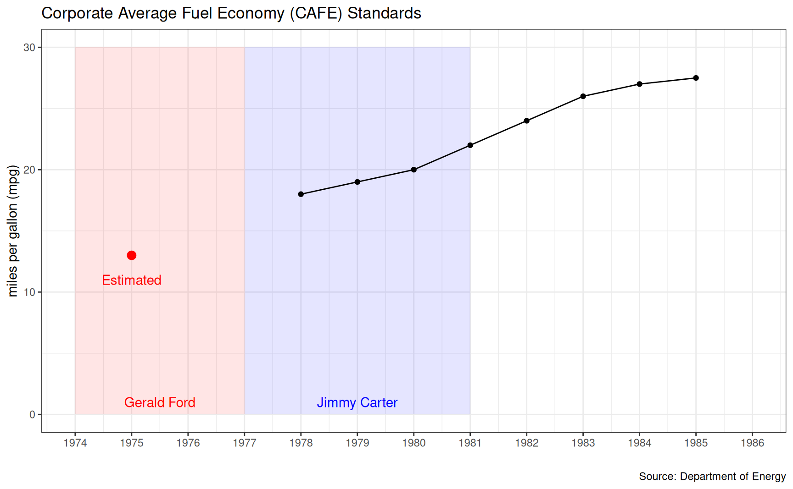
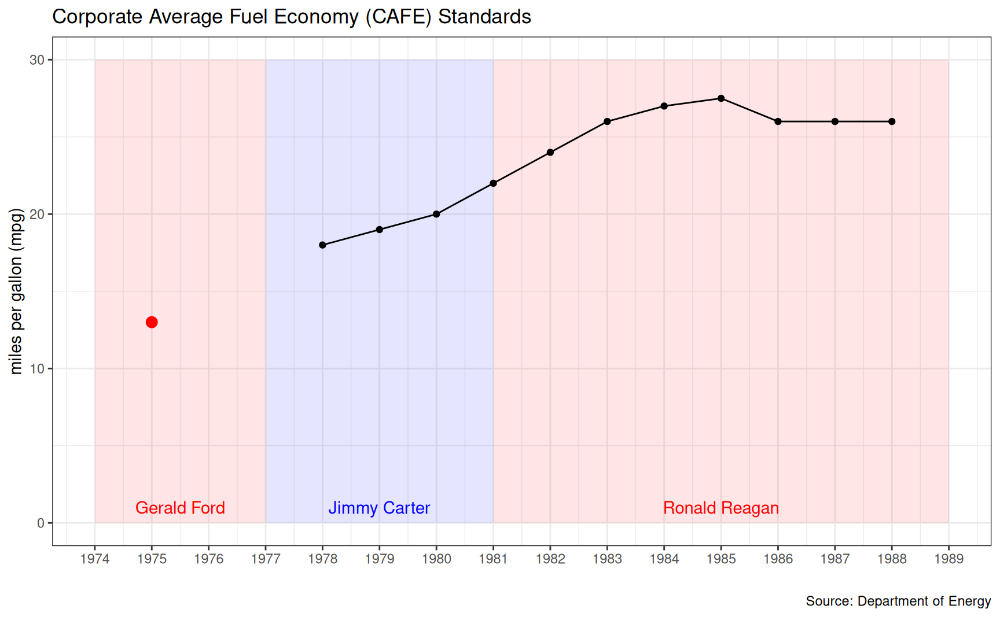
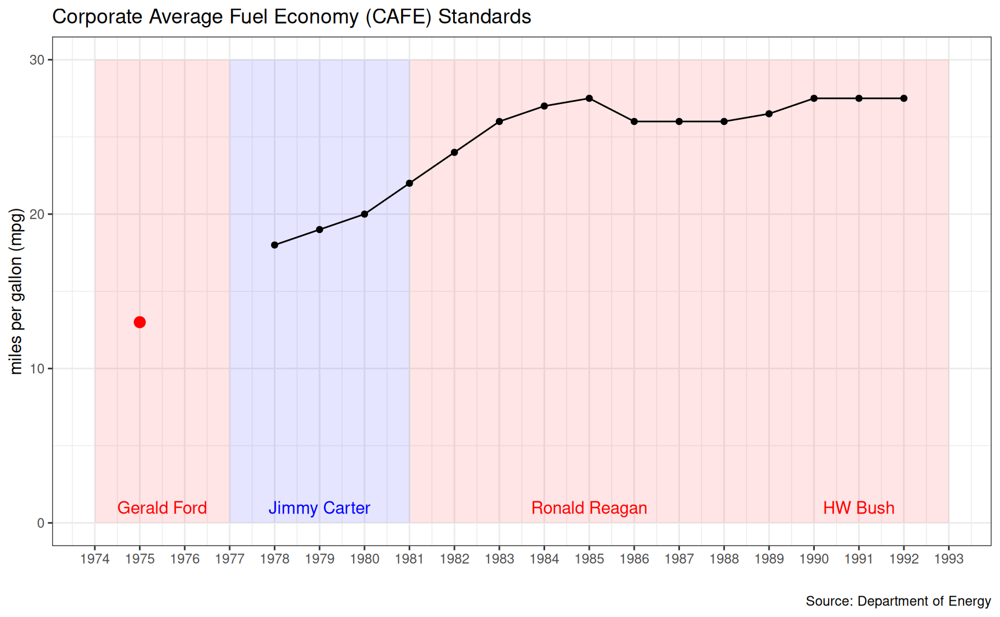
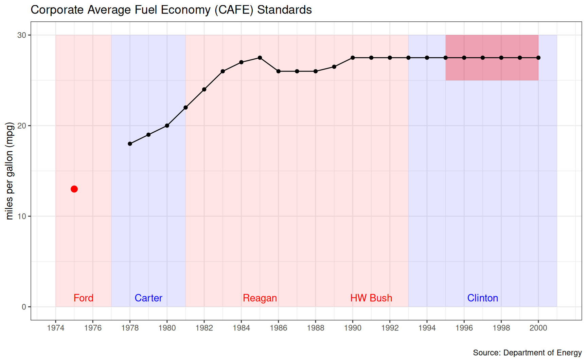
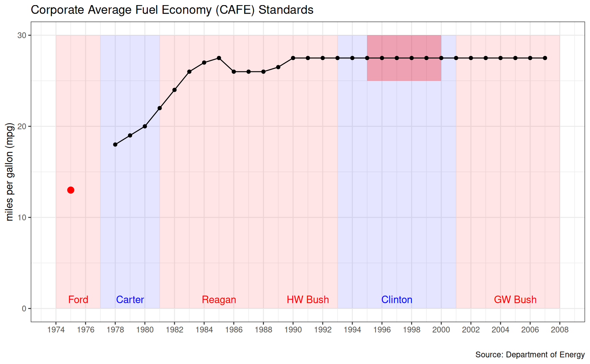
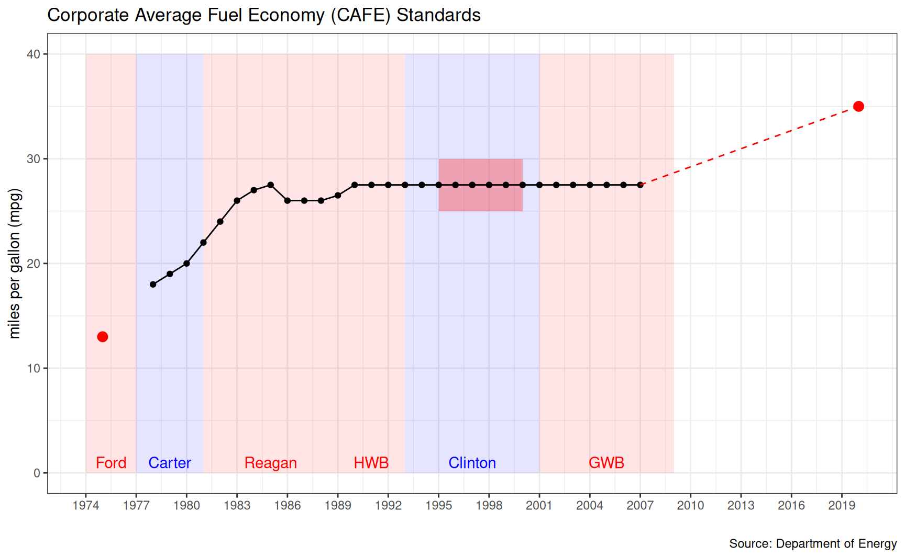
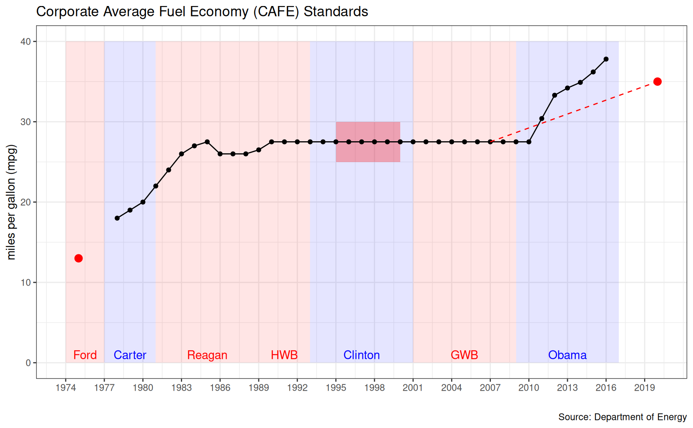
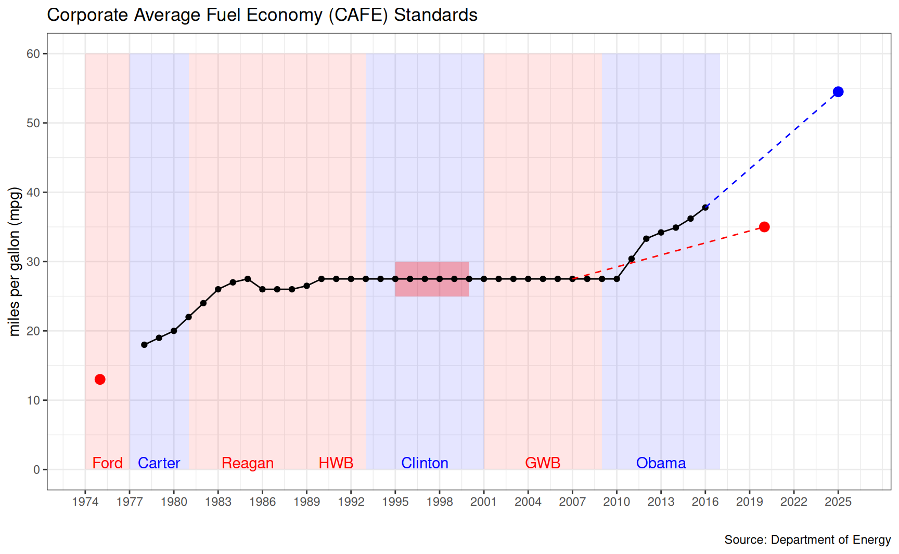
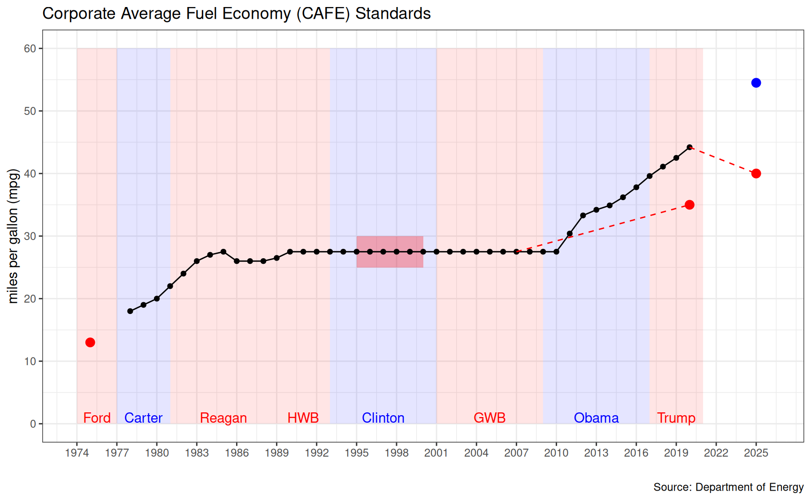
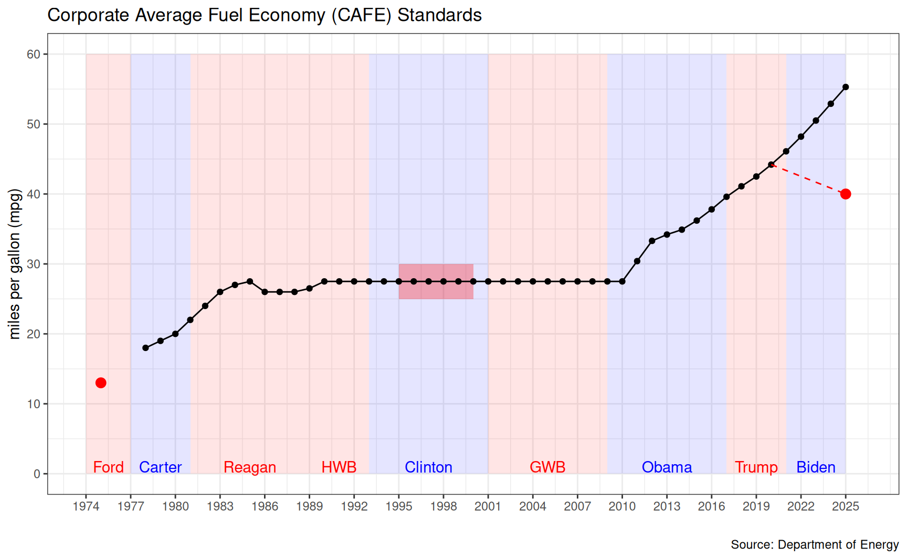
All public arguments are strategies
They do NOT reveal “true” preferences

1) Diagram the problem framing and use it to…
2) Unpack the stakeholder’s position
Who matters? (e.g. who are they talking to? why?)
What do they value? (e.g. preferred source of wisdom)
What costs are they trying to avoid?
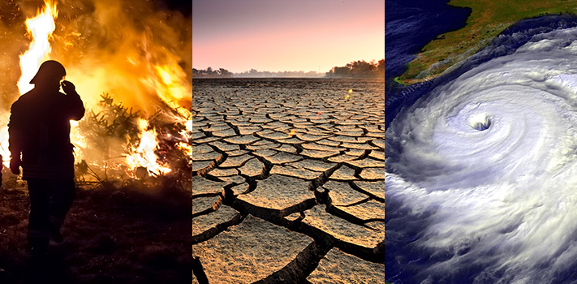
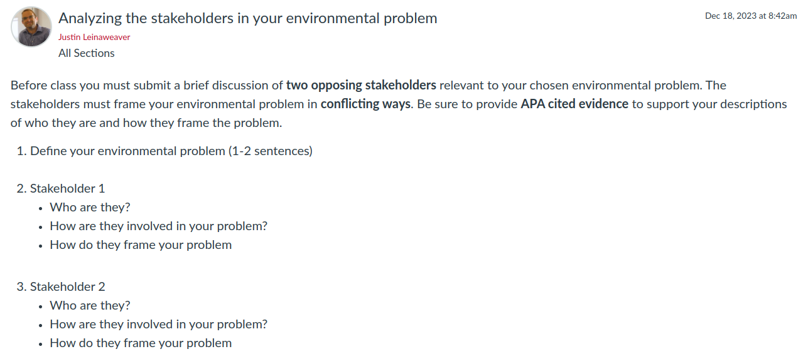